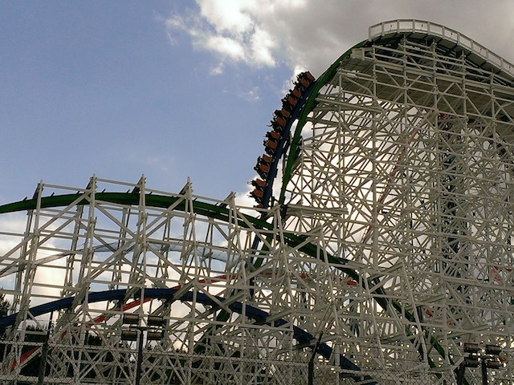
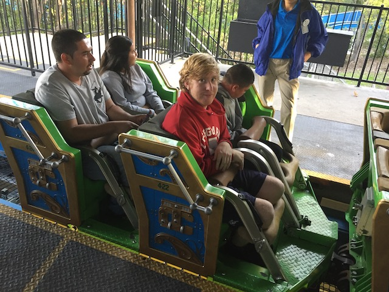

| |
Incrediblecoasters Winter 2016
Knotts Berry Farm Six Flags Magic Mountain Disneyland Resort
All right. Logan is still out in SoCal. So of course, we had to go to Six Flags Magic Mountain. And hey. Holiday in the Park is always good. Let's do this thing.
And of course, you have to get to Revolution early since now it always gets a f*cking horrendous line thanks to the VR (Six Flags really needs to do something about that).
But in more good news, Revolution got a new Christmas VR setting.
MUSH RUDOLPH!!! MUSH!!!
Ooh. I like how they made the Screampunk District more christmasy.

And of course, there's no going to Six Flags Magic Mountain without having a couple rides on Twisted Collosus.

"OMG! THIS IS THE BEST RMC EVER! I GIVE IT A 10!"
"Hey. Where is everyone? Oh, they must have all flocked to Silver Bullet. Logans favorite B&M Invert ever." =)
You miss Green Lantern yet? ;)
 *sniff* "But how am I supposed to soak myself now?"
*sniff* "But how am I supposed to soak myself now?"
Yeah. It's far from the best log flume ever. But screw it. We'll have fun.
 "Shh. Apocalypse is getting fairly rough. But don't tell Logan that, lest you suffer the wrath of him calling you a pussy and a little bitch."
"Shh. Apocalypse is getting fairly rough. But don't tell Logan that, lest you suffer the wrath of him calling you a pussy and a little bitch."
You know what really helps out with the Christmas atmosphere? The entrance to a f*cking Fright Fest maze. For once, I'm not shaking my fist and yelling at people to put away Christmas stuff because it's January. Now I'm shaking my fist and yelling at people to put away Halloween stuff because it's December.
I see you lift hill climber. =)
 Christmas Katy's Kettle.
Christmas Katy's Kettle.
Ooh! Original X spotting! =D
We know about you guys parking at Wendys to go to SFMM.
*gasp* Other religions are being represented!? HOW DARE YOU CONTRIBUTE TO THE WAR ON CHRISTMAS SFMM!!! *sob*
Scream is fun. Not too sure what else to say other than, it's a good ride.
Of course, Logan is a credit whore and needed to ride Speedy Gonzalas. Luckily for him, this ride is amazing. Best ride ever (Aside from Pony Express).
Here's a video of Logan freaking out on the ride for your enjoyment.
That's not Apocalypse. That's Evil Kineval (American Thunder). You can't fool me.
You said you loved Arrows Logan? Well here's a good one for you.
But of course, it's not a trip to Six Flags Magic Mountain without getting on X2.
That's still the best first drop ever.
"This is sh*t! I give it a 6! Put me back on Speedy Gonzalas!"
Oh boy. It's now dark. Time for Holiday in the Park to begin.
Every year, I'm impressed with just how much they do for this event.
Those Christmas Lights light up the street.
Anyone want an ariel view of all those Christmas Lights?
Aww. I wanted to look at all the lights from the top of Lex Luthor. ='(
Apparently from what I've heard, SFMM is actually one of the better parks for Holiday in the Park. Shocking, but hey. I really like the event.
And yeah. That's Holiday in the Park at Six Flags Magic Mountain. If you're ever in SoCal at Christmas time, definetly come on by and visit.
Disneyland Resort
Home
|